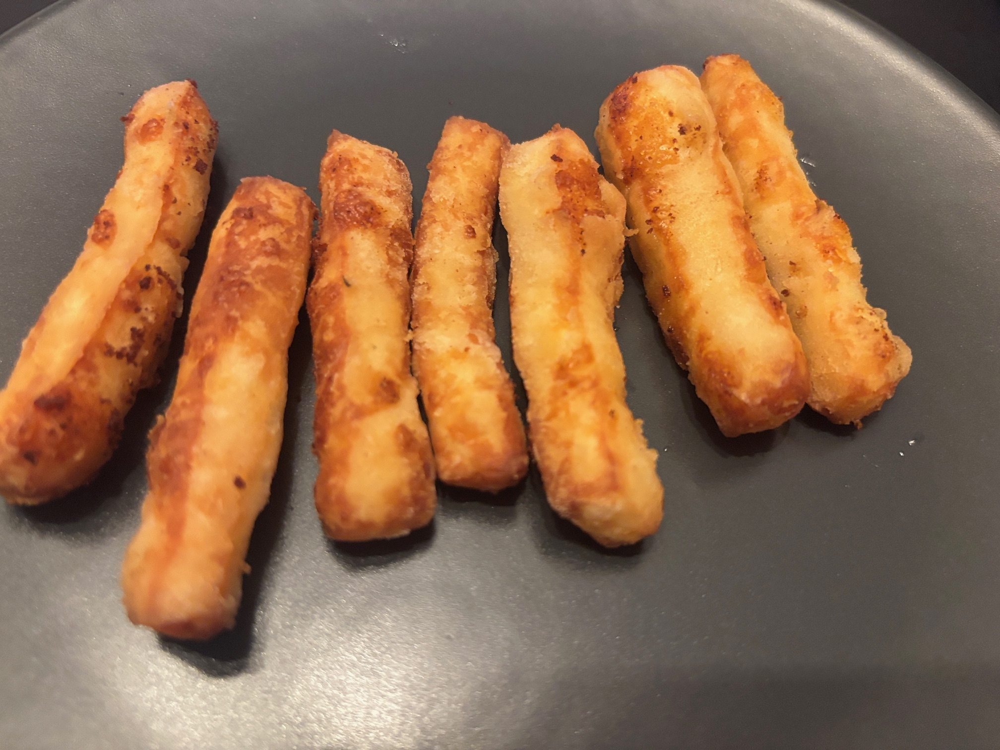

Halloumi Fries

A cheesy alternative to chips, perfect for dipping
This versatile Cypriot hard cheese is perfect for coating in batter and frying and goes great with a variety of sources, including tzatziki!
Ingredients
- 250g block of halloumi
- Flour
- Paprika
- Carbonated water
- Oil, for frying
Steps
- Slice the halloumi into thumb-sized fries and set aside on kitchen paper to dry
- Mix the flour and paprika in a mixing bowl with the carbonated water
- Dip the fries into the batter mixture and let the excess drip off
- Add to a hot pot of oil or a deep-fat fryer until fries have turned golden brown
- Season with salt and serve with a dipping sauce like tzatziki
Home